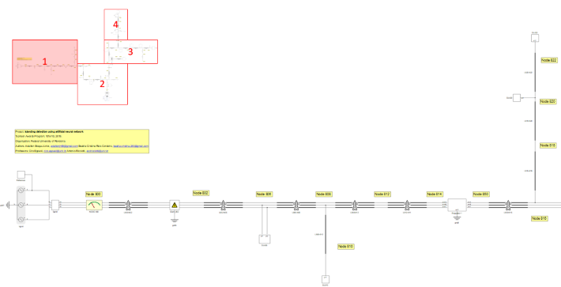
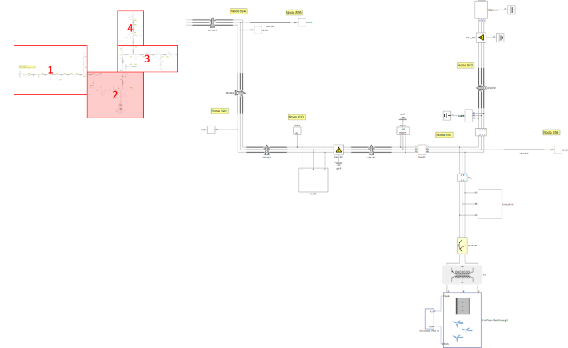
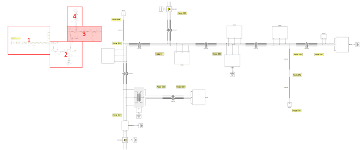
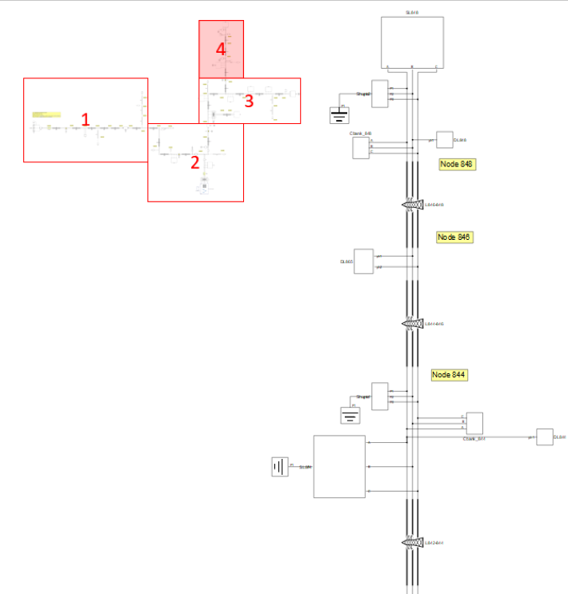
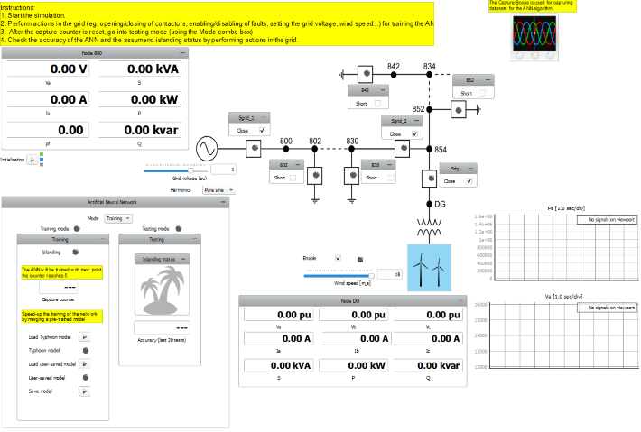
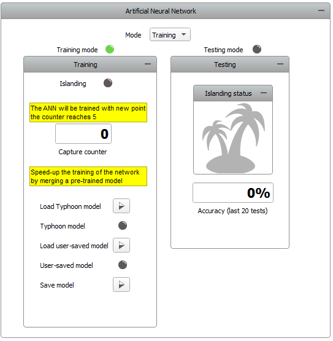
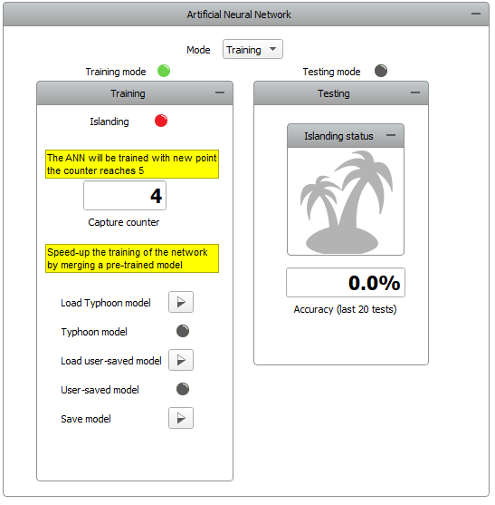
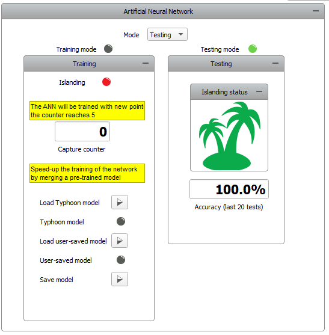

IEEE 34 node islanding with implemented Artificial Neural Network (ANN)
Demonstration of the use of Artificial Neural Networks (ANNs) in a microgrid.
Introduction
Artificial Neural Networks (ANNs) are a subset of machine learning, vaguely inspired by biological neural networks, and thus, the functionality of the human brain itself. The key processes in operating of neural networks are the training and testing processes, where the network is trained by processing examples (as input data) and subsequently tested on different sets of data. This model is intended to demonstrate the training and testing processes of an ANN and its implementation for islanding detection in an IEEE34 bus network.
Model description
The model consists of an IEEE34 bus network with an Wind Power Plant (Average) used as distributed generation (DG). The wind power plant is connected to the network on node 854 through a Three-phase two-winding transformer. The rated power of the wind power plant is 1.5 MVA and the rated voltage is 480 V. It is configured only to supply the grid with active power (meaning that reactive power is always zero). Figure 1 shows the IEEE34 bus network with the connected wind power plant.




Other components used that are of note are three TPST (Three-pole single-throw) contactors used as breakers for generating the state of islanding located at nodes 800 and 854, as well as four Three-phase ground faults located in the grid that are used for introducing disturbances during the training and testing processes.
Simulation
This application comes with a pre-built SCADA panel (Figure 5). The panel offers most essential user interface elements (widgets) to monitor and interact with the simulation in runtime. You can customize it freely to fit your needs.

The SCADA panel consists of the following parts:
- Capture/Scope
- One line diagram of the grid
- Artificial Neural Network Group
- Training subpanel
- Testing subpanel
- Node 800 Group
- Node DG Group
The one line diagram displays the state of contactors and faults in the grid (indicated by their corresponding LEDs). Here, you can perform several actions like opening/closing contactors and enabling/disabling faults by using the dedicated checkboxes. Using the dedicated sliders, you are able to set the grid voltage and the wind speed. Using the Harmonics combo box, you are able to enable/disable the presence of harmonics in the grid. Using the Enable checkbox, you can enable/disable the wind power plant. The Node 800 group allows you to observe phase voltage, phase current, apparent power, active power, reactive power, and the power factor on node 800. The Node DG group allows you to observe the values of phase voltages, phase currents, apparent power, active power, and reactive power on node DG.
The Artificial Neural Network group (shown in Figure 6) consists of 2 main modes:
- Training
- Testing

The dedicated LEDs for the training and the testing mode indicate the mode that you are currently in, and you are able to switch between these two modes by using the Mode combo box.
The Training subpanel consists of several parts:
- Islanding LED
- Capture counter
- Load Typhoon model button
- Typhoon model LED
- Load user-saved model button
- User-saved model LED
- Save model button
The islanding LED is used to indicate the state of Islanding. The capture counter is used for displaying the number of data points acquired during one cycle of training.
Upon the start of the simulation, all of the contactors are closed, and all faults are disabled (indicated by their dedicated LEDs).
By default, the model is set to training mode, and it is not possible to go into testing mode until the training process is finished, or an existing model is loaded. With each action performed in the grid (eg. opening/closing of contactors, enabling/disabling of faults, setting the grid voltage, wind speed...), a capture function is performed indicated by the “Capture in progress…” console message. A new set of data points is acquired and the capture counter increases by 1.
After the sixth action in the grid, the counter is reset. The message “New dataset trained.” in the Message console indicates that the training process is finished. After that, you are allowed to save the trained model if you choose to, or go into testing mode. Figure 7 shows the training process.

By using the load button, you are allowed to load a pre-saved model. This model can either be our Typhoon pre-trained model (that you load by clicking on the Load Typhoon model button), or you can load your own previously saved model (by clicking on the Load user-saved model button). A successful load of a model is indicated by the dedicated Typhoon model and User-saved model LEDs. The Save button allows you to save a trained model as a .sav file.
The Testing subpanel consists of the following parts:
- Islanding status
- Accuracy
By performing various actions in the grid (like in training mode), you are able to see the response of the neural network. The islanding status flag is used to indicate the state of islanding state assumed by the trained neural network, and you can check the accuracy of these assumptions (based on the previous 20 tests) below. Figure 8 shows the behavior of the testing subpanel while in testing mode.

When using a trained model, you are able to go back and forth between training and testing mode so you can further develop the ANN model.
Test automation
We don’t have a test automation for this example yet. Let us know if you wish to contribute and we will gladly have you signed on the application note!
Example requirements
Table 1 provides detailed information about the file locations and hardware requirements for running the model, followed by the HIL device resource utilization when running the model using this minimal hardware configuration. This information is provided to help you with running and customizing the model as you see fit.
| Files | |
|---|---|
| Typhoon HIL files |
IEEE 34 node islanding with Artificial Neural Network ieee 34 node islanding.tse ieee 34 node islanding.cus |
| Minimum hardware requirements | |
| No. of HIL devices | 1 |
| HIL device model | HIL402 |
| Device configuration | 1 |
| HIL device resource utilization | |
| No. of processing cores | 3 |
| Max. matrix memory utilization | 69.26% |
| Max. time slot utilization | 100% |
| Simulation step, electrical | 6 µs |
| Execution rate, signal processing | 120 µs |
Authors
[1] Nikola Lucic
[2] Simisa Simic